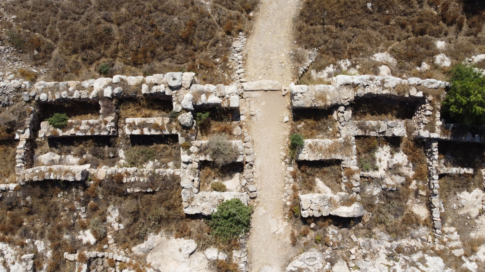

Si el Éxodo fue el choque de la entrega anterior, David y Salomón son el campo de batalla de la arqueología bíblica. Aquí no hay una respuesta cómoda ni un consenso limpio: hay dos bandos, hallazgos que se lanzan como argumentos, y un debate que lleva décadas y sigue vivo. Es el mejor lugar para ver la disciplina en acción, discutiendo consigo misma. Entremos con cuidado.
01El reino según la Biblia
El relato bíblico es majestuoso. David, tras vencer a Goliat, unifica las tribus, conquista Jerusalén y la convierte en capital, somete a los pueblos vecinos y funda una dinastía. Su hijo Salomón hereda un imperio próspero: construye el Templo, levanta palacios, comercia con reinos lejanos, acumula riqueza legendaria y sabiduría proverbial. Es la Edad de Oro de Israel, la Monarquía Unida, hacia el siglo X a.C.
Durante mucho tiempo se dio por histórico sin discusión. El problema llegó cuando la arqueología fue a buscar ese imperio bajo tierra —y lo que encontró abrió la guerra—.
02Primero: ¿existió David?
Hubo un tiempo, no hace tanto, en que algunos estudiosos dudaban de que David hubiera existido siquiera —podía ser un personaje legendario, como el rey Arturo—. Ese debate se cerró en 1993, con uno de los hallazgos más importantes de la arqueología bíblica: la Estela de Tel Dan.

Es una losa de basalto grabada por un rey arameo (probablemente Hazael de Damasco) que celebra una victoria sobre sus enemigos del sur, a los que llama “Casa de David” (bytdwd). El detalle es decisivo: en el Cercano Oriente, las dinastías se nombraban por su fundador (igual que Asiria hablaba de la "Casa de Omri" para referirse a Israel). Que un enemigo, apenas 140 años después, llamara a Judá "la Casa de David" prueba que David era recordado como el fundador histórico de una dinastía real.
03La verdadera pelea: ¿imperio o cacicazgo?
Zanjada la existencia de David, el debate se desplazó a su escala, y ahí se dividió el campo en dos bandos que la prensa bautizó como “minimalistas” y “maximalistas”:
La clave de toda la disputa es la datación: un margen de apenas 50-100 años decide si unas murallas son "de Salomón" o "de un siglo después". Finkelstein propuso rebajar esas fechas (su famosa “cronología baja”), lo que encogía el reino de David a un cacicazgo. Sus críticos defendieron las fechas tradicionales. De ese pulso de décadas depende toda la imagen del Israel del siglo X.
04El hallazgo que recalibró el debate
Aquí es donde esta serie tiene que actualizar el libro de 2001. Porque después de La Biblia desenterrada apareció un yacimiento que cambió la conversación: Khirbet Qeiyafa.

Khirbet Qeiyafa es una ciudad amurallada, con planificación urbana y una inscripción temprana, datada por carbono-14 a c. 1000 a.C. —justo la época de David—. Para sus excavadores (Yosef Garfinkel), demuestra que ya existía en el siglo X un estado judaíta capaz de construir ciudades fortificadas y administrarlas, lo que contradice la cronología baja y apoya un reino davídico más sustancial. Es, además, un sitio raro: tiene esencialmente una sola capa de ocupación, lo que facilita datarlo sin la confusión de estratos superpuestos.
El debate no está cerrado —Finkelstein y otros discuten la interpretación de Qeiyafa—, pero el péndulo se ha movido: hoy la cronología baja está seriamente cuestionada, y la balanza se inclina hacia un estado davídico temprano más real de lo que el libro de 2001 sugería.
05Síntesis
El reino de David y Salomón "se encogió" respecto al relato bíblico —casi con seguridad no fue el imperio deslumbrante de la Escritura—, pero no se evaporó. La verdad, hasta donde la arqueología alcanza hoy, parece estar en un punto intermedio: un estado real, organizado, pero modesto, en un siglo X que ya no es ni el imperio dorado de la Biblia ni el vacío de aldeas de la cronología baja.
Y hay una lección de método en todo esto: la arqueología no es un veredicto fijo, sino una conversación que se corrige. Un solo yacimiento nuevo —Khirbet Qeiyafa— movió el consenso en veinte años. Por eso el medidor de esta serie no marca certezas, sino el estado de un debate en marcha. En la última entrega llegamos al final del recorrido: el rey Josías y cómo su época pudo dar forma a la Biblia misma.
Nota sobre el rigor y las fuentes
La Estela de Tel Dan (1993, s. IX a.C.) como primera mención extrabíblica de la "Casa de David" es dato firme y ampliamente aceptado; David es el personaje bíblico más antiguo confirmado epigráficamente. Khirbet Qeiyafa, datado por C-14 a c. 1000 a.C., es real, aunque su interpretación (qué prueba exactamente sobre el reino) sigue en discusión.
Debate abierto: la "cronología baja" de Finkelstein frente a la "cronología modificada" de Amihai Mazar y las lecturas de Garfinkel. Este artículo refleja que el péndulo se ha movido desde 2001 hacia un estado davídico más sustancial, sin declarar cerrado el debate. Las etiquetas "minimalista/maximalista" son simplificaciones periodísticas de posturas más matizadas.
Este artículo describe el estado de la investigación; no juzga el valor religioso del relato bíblico sobre David y Salomón.